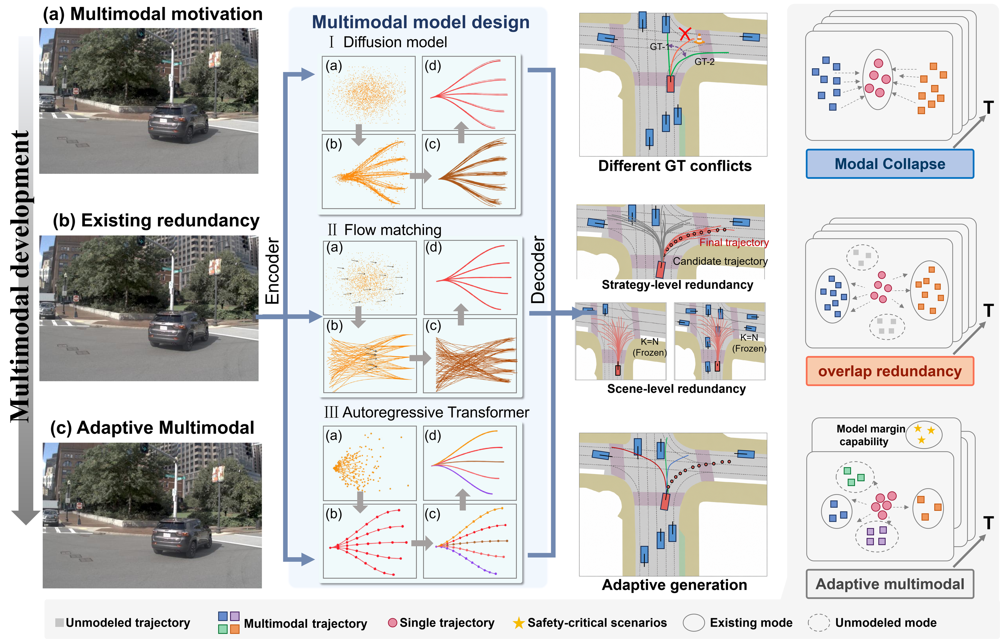
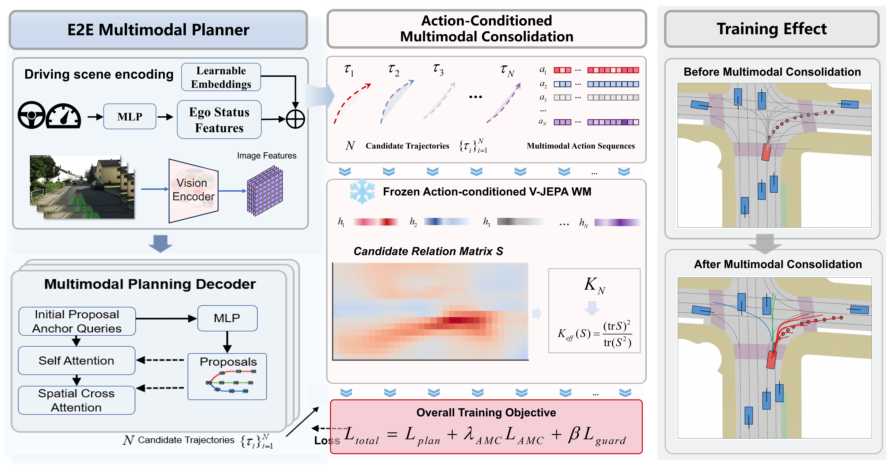
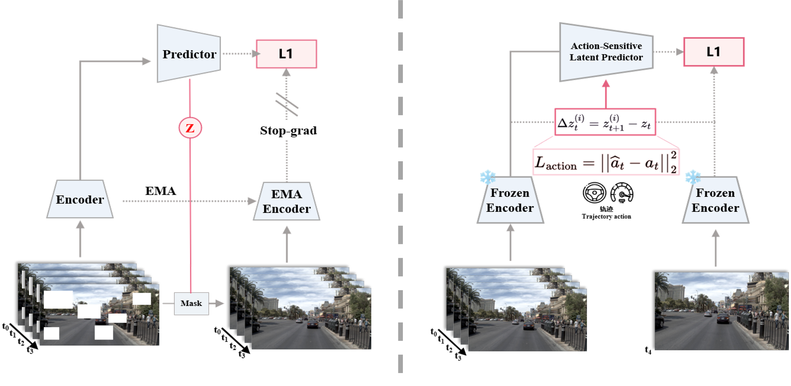
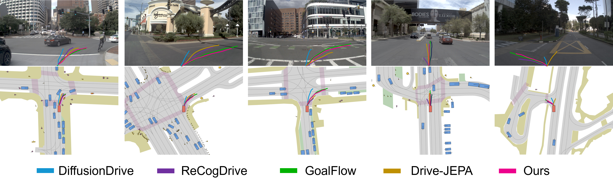
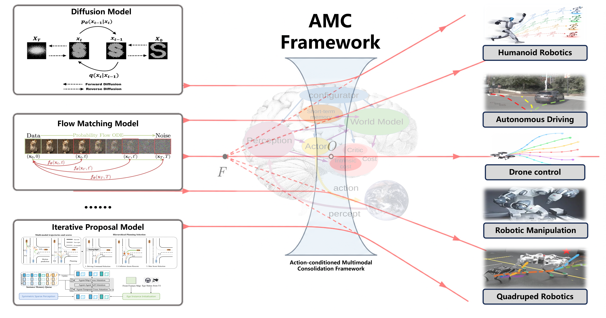
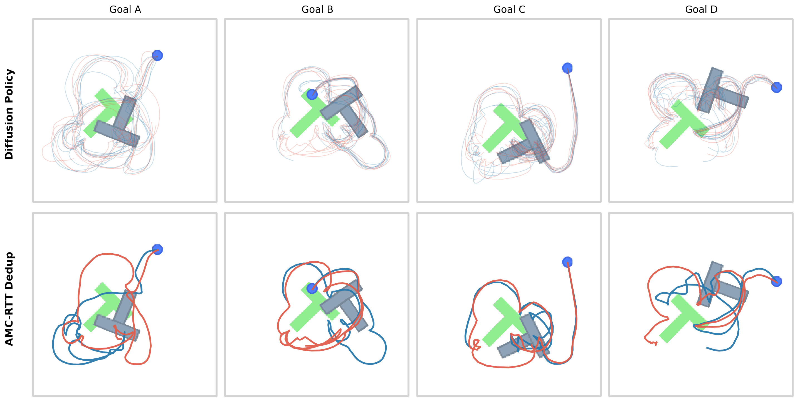
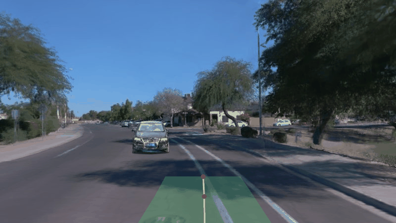
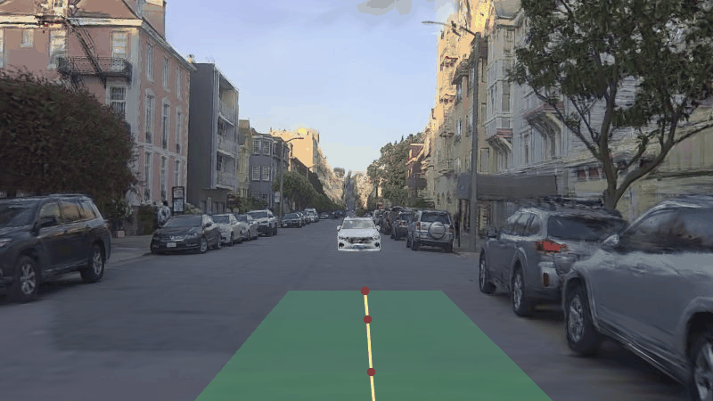
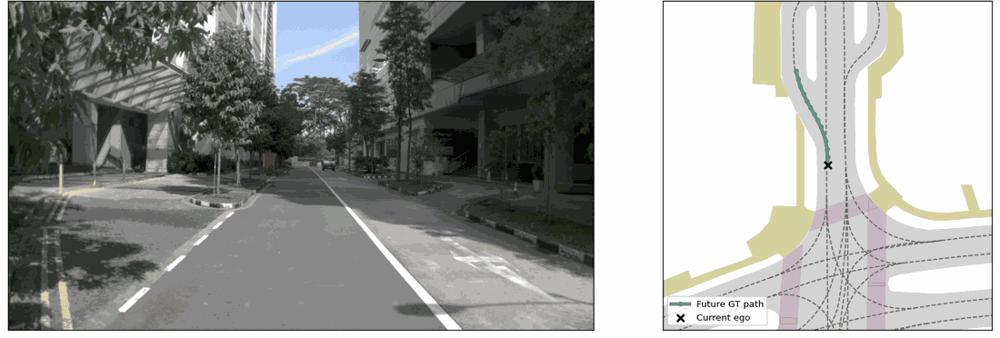

How Many Futures Are Enough?
Learning Redundancy-Aware Effective Multimodality
for End-to-End Autonomous Driving with
Action-Conditioned Predictive Representations

Beyond More Futures · 知几驾驶
Distinguish what is effectively the same; preserve what is truly different.
Seek not more, but what is fitting.
辨其同，存其异；不求多，而求当。
Zhiji Driving offers a conceptual lens for our redundancy-aware view of multimodal futures.
Overview
Scene-adaptive capacity for decision-relevant driving futures.
Abstract
Multimodal planning is central to end-to-end autonomous driving because one scene can admit several valid actions. Yet a fixed candidate count does not guarantee that the candidates represent distinct futures: some may be redundant variations, while others differ in speed, timing, or interaction consequences. We introduce effective multimodality to describe the structure carried by a fixed candidate budget and propose AMC-Drive, which uses a frozen action-conditioned predictive representation to measure candidate relations. A topology-aware calibration objective reduces repeated predictive futures, while a one-sided cross-mode guard protects distinct decision modes. AMC-Drive keeps the candidate count and inference interface unchanged and applies the additional calibration during training. It reaches 93.9 PDMS on NAVSIM v1, 89.2 EPDMS on NAVSIM v2, and 0.4308 HD-Score in zero-shot HUGSIM closed-loop evaluation without HUGSIM-specific fine-tuning. Additional figures show the predictive model, trajectory context, and qualitative transfer scope.

Method
Core architecture of AMC-Drive and its fixed-budget consequence-aware calibration.
Method Summary
AMC-Drive preserves the multimodal planning backbone and adds a frozen action-conditioned predictive representation during training. Pairwise candidate relations define effective multimodality; the topology-aware objective calibrates this structure, and a one-sided guard limits contraction across distinct decision modes. The output cardinality and inference interface remain unchanged.
Ltotal = Lplan + λAMCLAMC + λguardLguard


Results and Scope
Headline benchmark results and the evidence boundary of the visual examples.



Visualization
HUGSIM Closed-Loop Examples
Selected baseline renderings for visual inspection; numerical results are reported above and in the paper.




Action-Conditioned Predictive Modeling

